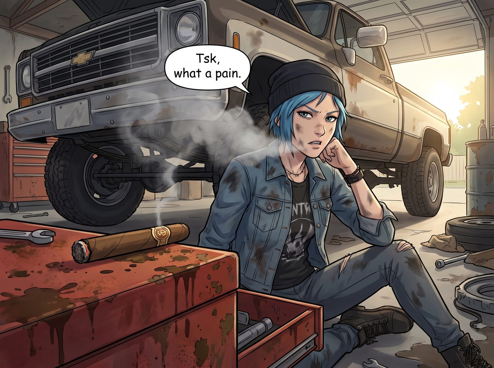
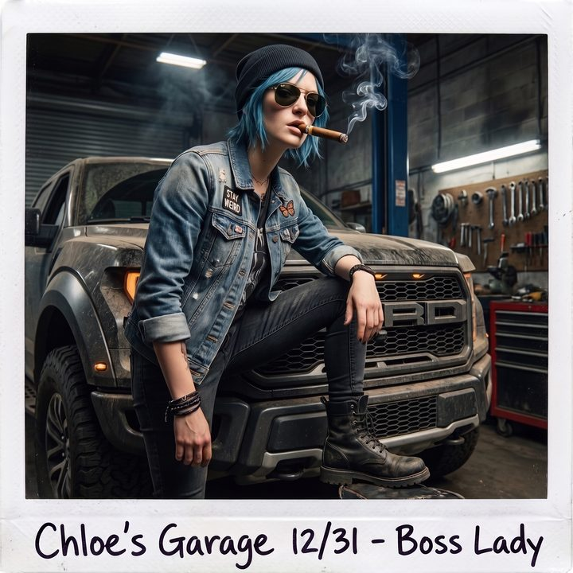
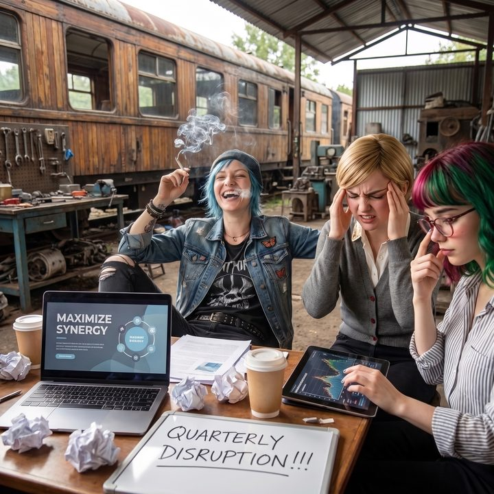

敏捷雙模架構



那批透過特殊名義採購來的古巴雪茄送到後，被收進了車廂客廳裡那台頂級恆溫雪茄櫃。
雪茄剛送到的頭三天，Chloe 確實爽翻了。
一、黑幫大佬的代入感
她徹底迷上了那種西海岸黑幫大佬的代入感。那幾天，她連修車都戴著一副復古的雷朋墨鏡，嘴裡叼著那根粗壯的高希霸雪茄。當她咬著雪茄，手裡拿著電鑽，在火花四濺中眯起眼睛時，她覺得自己簡直就是黑幫電影的靈魂附體。
「Max，快拍我！從下往上拍！把那種看垃圾的眼神拍出來！」Chloe 叼著雪茄，一腳踩在猛禽皮卡的保險桿上，擺出一個囂張至極的姿勢。那種頂級古巴菸葉散發出的、混合著咖啡與皮革的濃郁香氣，確實比她以前抽的廉價萬寶路好聞了一萬倍。
但是，這股黑幫大佬的新鮮感，僅僅維持到了第四天。
因為 Chloe 終於絕望地發現了一個致命問題——抽雪茄，實在是太他媽麻煩了！
二、機油裡的聖杯
這天下午，Chloe 正在車底更換皮卡的機油濾芯。她本來叼著一根剛點燃的雪茄，但雪茄太重了，叼久了下巴酸痛；而且雪茄的煙霧極大，熏得她在車底睜不開眼睛。
「嘖，麻煩精。」Chloe 煩躁地從車底滑出來，把那根價值不菲的頂級雪茄，隨手放在了旁邊一個沾滿機油和防鏽劑的工具箱上。
然後，她轉頭就沉浸在了修理傳動軸的機械狂熱中。
四十分鐘後。滿手都是黑色油污的 Chloe 終於擰緊了最後一顆螺絲。她從車底爬出來，累得滿頭大汗，此刻她的神經末梢正在瘋狂尖叫，急需一口尼古丁來續命。
她轉過頭，看向工具箱上的那根古巴雪茄。雪茄早就熄滅了。
按照那套繁瑣得令人髮指的老錢階級禮儀，如果雪茄中途熄滅，必須先用雪茄剪小心翼翼地切掉碳化的頭部，然後清理菸灰，接著重新點燃一根昂貴的雪松木條，再次均勻地烘烤切口……這整個重啟儀式至少需要五分鐘。
三、身體的本能
Chloe 看著那根冷冰冰的雪茄，又看了看自己沾滿機油的雙手。
「去妳的儀式感。」Chloe 翻了個巨大的白眼。她的大腦根本沒有耐心去走完這套品鑒時間灰燼的流程，她的身體只需要最簡單粗暴的化學刺激。
幾乎是身體的本能，Chloe 把手往沾滿油污的牛仔褲口袋裡一掏。一個被壓得皺巴巴的萬寶路紅牌煙盒出現在手裡。她熟練地用牙齒咬出一根菸，左手掏出那把破舊的金屬打火機，在褲腿上噌地一劃。
「咔嗒。」幽藍色的火焰燃起。Chloe 深深地吸了一口，感受著那股劣質、辛辣的焦油味毫無阻礙地刮過喉嚨，直達肺部。
「呼——」Chloe 吐出一大口灰色的煙霧，發出一聲屬於底層龐克的、極度舒暢的嘆息。「這他媽才是生活。快、狠、準。不用伺候祖宗。」
四、慘遭蹂躪的證物
就在 Chloe 靠著輪胎，美滋滋地抽著廉價萬寶路時，車廂的門開了。
Victoria 端著一杯現磨咖啡走了出來。她原本想呼吸一下森林裡的新鮮空氣，但下一秒，她的目光死死鎖定在了工具箱上。
一根還剩大半截的頂級雪茄，正孤零零地躺在一攤黑色的廢機油和生鏽的螺絲釘中間，雪茄的茄衣上甚至還沾上了一個清晰的黑色機油指紋。
而離這根雪茄界聖杯不到一米的地方，那個藍頭髮的罪魁禍首，正一臉陶醉地抽著幾塊錢一包的劣質香菸！
「Chloe！！！Price！！！」
Victoria 的尖叫聲驚飛了森林裡的幾隻烏鴉。她氣得渾身發抖，踩著高跟鞋衝了過來，指著那根慘遭蹂躪的雪茄：「妳這個沒有教養的野蠻人！妳居然把它扔在機油裡？！妳知道那支雪茄的年份比妳那輛破車還要值錢嗎？！而且妳為什麼又在抽那種聞起來像化糞池爆炸一樣的垃圾萬寶路？！」
「冷靜點，公主殿下！」Chloe 掏了掏被震聾的耳朵，理直氣壯地反駁，「這玩意兒太嬌貴了！它自己動不動就熄火，還得讓我花五分鐘去哄它重新燒起來！我是個修車的，不是在談幾億美金併購案的CEO！我需要的是能三秒鐘點燃、抽完就能用腳踩滅的提神工具！」
「那是藝術品！藝術品是需要時間去——」
五、雙軌制資源管理
「兩位學姐，請停止這種無效率的聲波攻擊。這會干擾我計算本季度稅務抵扣的進度。」
一個軟糯的聲音打斷了她們的爭吵。Lily 抱著她的平板，像個幽靈一樣出現在了車廂門口。她推了推反光圓框眼鏡，目光平靜地掃過暴跳如雷的 Victoria、一臉無賴的 Chloe，以及那根泡在機油裡的古巴雪茄。
「Lily！妳來評評理！」Victoria 痛心疾首地指著工具箱，「這是對珍貴資產的嚴重浪費！」
然而，Lily 只是看了一眼數據，便搖了搖頭。
「Victoria 學姐，妳陷入了資產單一化用途的邏輯誤區。」Lily 走到工具箱前，看著那根機油雪茄，給出了一個讓兩人都目瞪口呆的合規解釋：「從雙軌制資源管理的角度來看，Chloe 學姐目前的混合消費模式，其實是極度優化的。」
「什麼鬼？」Chloe 咬著萬寶路，滿臉問號。
Lily 豎起一根蒼白的手指：「首先，高希霸雪茄屬於重資產面子工程。它的存在意義，是為了提供黑幫大佬的情緒價值，並在我們需要進行高階社交威懾時，充當實力證明。即使它被放在機油裡，它已經完成了讓 Chloe 學姐爽了十分鐘的核心使命，這部分沉沒成本我們沒有任何損失。」
接著，Lily 轉過頭，看著 Chloe 嘴裡的萬寶路：「而萬寶路紅牌，屬於日常營運耗材。它具備極高的流動性、零維護成本和極短的響應時間。當 Chloe 學姐在進行高強度的體力勞動時，雪茄會帶來過高的維護摩擦力，而萬寶路則完美補足了短期的生理需求。」
Lily 推了推眼鏡，總結陳詞：「高低搭配，互不干擾。Chloe 學姐的這種行為，在現代企業管理中被稱為敏捷雙模架構。這是一種極其先進的生存策略。」
六、企業管理天才
全場死寂。
Chloe 愣了半天，然後猛地一拍大腿，狂笑著朝 Victoria 吐出一口煙圈：「聽到了嗎？！老娘這叫敏捷雙模架構！我是個極其先進的企業管理天才！」
Victoria 痛苦地扶住額頭，感覺自己的血壓正在飆升：「瘋了……這個車廂裡的人都瘋了。妳居然用企業管理架構來合法化一個野蠻人的壞習慣……」
這時，Max 拿著相機從車廂裡探出頭來，對著眼前這一幕按下了快門。
照片裡，生氣的財閥千金、得意洋洋叼著平民香菸的龐克女，以及用冷酷術語強行解釋這一切的黑魔法師。Max 忍不住笑著搖了搖頭。
她知道，Chloe 骨子裡永遠是那個屬於街頭和廢土的阿卡迪亞灣女孩。她偶爾會披上昂貴的外衣，享受一下黑幫大佬的錯覺；但在疲憊和真實的生活面前，她依然會毫不猶豫地回到那個最粗糙、最真實的萬寶路世界。
而最棒的是，在這個車廂裡，總有人會用世界上最荒謬又最嚴謹的方式，來保護她這份不合時宜的真實。